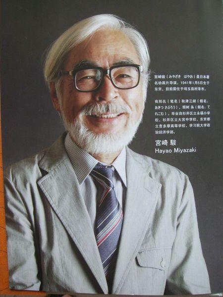

人物简介

宫崎骏，1941年1月5日出生于日本东京都文京区，日本动画师、动画制作人、漫
画家 、动画导演、动画编剧。毕业于日本东京学习院大学政治经济部。
1963年进入东映动画公司，从事动画师工作。1971年加入手冢治虫成立的“虫
Production动画部”。1974年加入Zuiyou映像与高田勋、小田部羊一共同创作
《阿尔卑斯山的少女》。1979年转入东京电影新社创作了自己首部电影《鲁邦
三世卡里奥斯特罗之城》。1982年开始独立创作漫画，在《Animage》上连载
漫画《风之谷》，该作品获得第23届日本漫画家协会赏。1984年执导《风之谷》
，该片获得罗马奇幻电影节最佳动画短片奖等4项大奖。
1985年与高田勋、铃木敏夫共同创立吉卜力工作室。1986年执导《天空之城》，
该片获得第41
回每日电影奖大藤信郎赏等6项大奖。1988年执导《龙猫》，该片荣获第13回
报知电影奖最佳导演奖等24项大奖。1997年执导《幽灵公主》，该片荣获第21届
日本电影学院奖最佳影片奖等27项大奖。2001年执导《千与千寻》，该片荣获第
75届奥斯卡金像奖最佳动画长片奖、第52届柏林国际电影节金熊奖等9项大奖。2
004年执导《哈尔的移动城堡》,该片荣获第9届好莱坞电影奖最佳动画片奖等8项
大奖 。
2013年7月16日，他敦促安倍晋三处理好慰安妇问题，日本应向韩国和中国谢罪。
2013年执导《起风了》该片荣获第37届日本电影学院奖最优秀动画作品奖等8项
大奖，也是其最后长篇作品。同年9月6日宣布引退。2014年11月8日荣获第87届
奥斯卡金像奖终身成就奖。
作品简介
《侧耳倾听》
坚信爱的美好，相信幸福 根据柊葵的同名漫画改编，由多次在宫崎骏作品中出任作画监督的近藤喜文担任导演。该片讲述了一个发生在1994年的故事，作画的背景大部分来自东京附近的多摩市中心。 男女主角互相勉励互相学习，为各自的理想而奋斗，叙述了少男少女间清纯真挚感人的恋爱故事，表达出作者对生活的态度和积极进取的精神。
《哈尔的移动城堡》
感动人心的爱情片 该片改编自英国的儿童小说家黛安娜·W·琼斯的《魔法师哈威尔与火之恶魔》，谱出了一段战地恋曲，透过这唯美的画面，观众读到的不是孤独的等待，而是执着、感动人心的爱情。
《红猪》
极赋浪漫主义色彩的作品 影片改编自宫崎骏漫画作品《飞行艇时代》，影片主要讲述了被自己诅咒而变成猪的主人公打击空中劫匪，保护身边的人的故事。电影中情感的缔结是那么纯粹，使哀而不伤的温情由内而外的弥散于光影的艺术间，构筑了翱翔于空的不凡人生， 《红猪》犹如一篇浪漫抒情的自由童话，沁人心脾，憧憬爱情。
《千与千寻》
很难在找到一部电影能与之并肩 该片讲述了少女千寻意外来到神灵异世界后，为了救爸爸妈妈，经历了很多磨难的故事。2001年该片在日本最终取得了304亿日元的票房。 2003年，获得第75届奥斯卡金像奖最佳动画长片奖》在第52届柏林电影节上荣获金熊奖，成为电影史上第一部获得国际电影节最佳电影奖的动画作品。
《幽灵公主》
在当时是日本史上票房最高的电影 《幽灵公主》传承自宫崎骏长久以来关于人与自然之间的深邃思考。 影片不拘泥于人类对环境的破坏，而是从人与自然之间无从化解的天然矛盾出发，通过人类自身的生存角度，探寻人类与自然是否能够真正实现和谐共存这一终极命题。
《龙猫》
宫崎骏较为成功的代表作之一 《龙猫》对于日本动画走向世界具有里程碑的意义，是宫崎骏较为成功的代表作之一 。影片的风格清新恬淡，充溢着浓浓的亲情，让人感觉如沐春风。 该片以大自然为主题，表现了小月姐妹和龙猫和睦相处的快乐时光。
人物语录
1.人老了，唯一的好处就是失去的东西少了。——宫崎骏
2.我不知道离别的滋味是这样凄凉，我不知道说声再见要这么坚强。——《千与千寻》
3.你应该要学着做你自己，面对真实的自我，只要做到这一点你就什么都不用惧怕。——宫崎骏
4.人类，就是一直在重复过去的道路。每个人都认为自己是对的，然后就由罪恶衍生出更多的罪恶，悲哀衍生出更多的悲哀，永远找不到出路。
5.我们的孤独就像天空中漂浮的城市，仿佛是一个秘密，却无从述说。——《天空之城》
6.不要对外表过分在意，心灵才是最重要的。——宫崎骏《魔女宅急便》
7.生活坏到一定程度就会好起来，因为它无法更坏。努力过后，才知道许多事情，坚持坚持，就过来了。——《龙猫》
8.这个世界真的很现实，每个人都在为着同一个目的，不惜一切代价努力着，心甘情愿的成为金钱的奴隶，死心蹋地的付出。